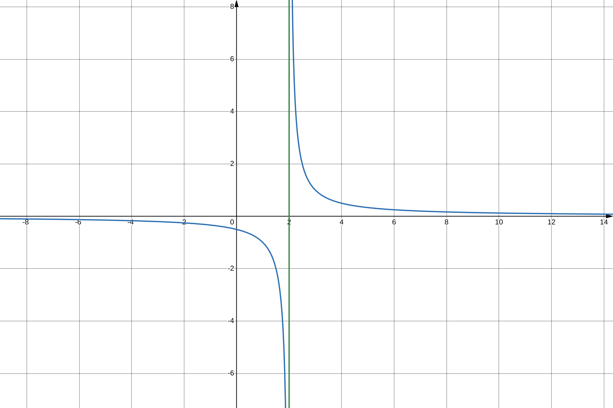
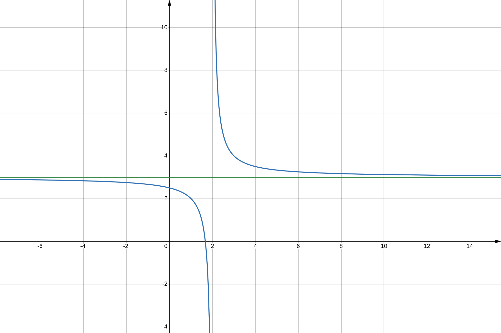
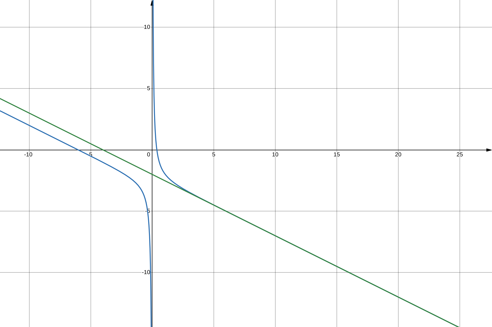

Dans tout ce qui suit, on notera \(C_f\) la courbe représentative d’une fonction \(f\).
Les asymptotes verticales
\(C_f\) admet une asymptote verticale d’équation \(x = x_0\) si
$$
\quad \lim_{x \to x_0} f(x) = \pm \infty
$$

Tracé de la courbe \(y = \frac{1}{(x-2)}\) et de son asymptote verticale
\(x = 2\).
Une fonction peut avoir une limite différente à gauche et à droite de \(x_0\), on notera
alors
$$
\quad \lim_{x \to {x_0}^+} f(x) = \pm \infty
$$
et
$$
\quad \lim_{x \to {x_0}^-} f(x) = \pm \infty
$$
Les asymptotes horizontales
\(C_f\) admet une asymptote verticale au voisinage de \(+\infty\), d’équation \(y = l\)
(avec \(l \in \mathbb{R}\)) si
$$
\quad \lim_{x \to +\infty} f(x) = l
$$

Tracé de la courbe \(y = \frac{1}{(x-2)} + 3\) et de son asymptote horizontale
\(y = 3\).
\(C_f\) admet une asymptote verticale au voisinage de \(-\infty\), d’équation \(y = l\)
(avec \(l \in \mathbb{R}\)) si
$$
\quad \lim_{x \to -\infty} f(x) = l
$$
Les asymptotes obliques
Pour que \(C_f\) admette une asymptote oblique au voisinage de \(+\infty\), il faut que
$$
\quad \lim_{x \to +\infty} f(x) = + \infty
$$
\(C_f\) admet en \(+\infty\) une asymptotes oblique d’éqation \(y=ax + b\)
(\(a \in \mathbb{R}\) et \(b \in \mathbb{R}^*\)) si
$$
\quad \lim_{x \to +\infty} (f(x) -(ax+b)= 0
$$

Tracé de la courbe \(y = -\frac{1}{2}x -2 + \frac{1}{(\rm{e}^x-1)}\) et de son
asymptote oblique \(-\frac{1}{2}x -2\).
Pour que \(C_f\) admette une asymptote oblique au voisinage de \(-\infty\), il faut que
$$
\quad \lim_{x \to -\infty} f(x) = - \infty
$$
\(C_f\) admet en \(-\infty\) une asymptotes oblique d’éqation \(y=ax + b\)
(\(a \in \mathbb{R}\) et \(b \in \mathbb{R}^*\)) si
$$
\quad \lim_{x \to -\infty} (f(x) -(ax+b)= 0
$$